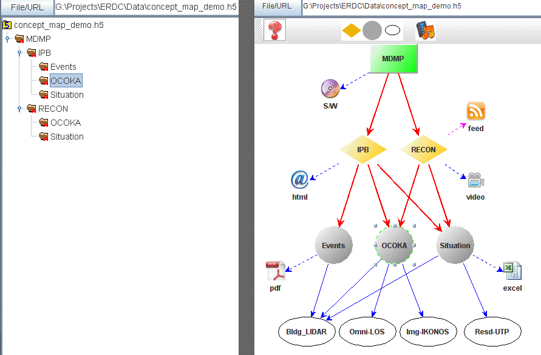
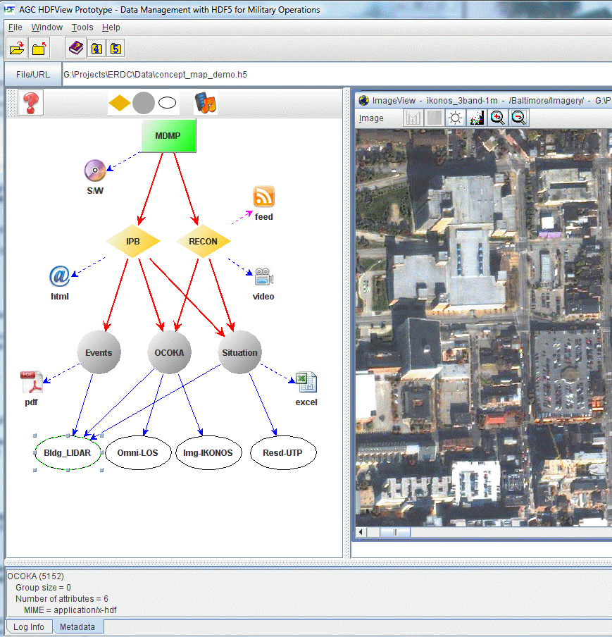

| This research effort is supported by the BAA project entitled "Research on Data Management with HDF5 in Support of Military Operations". The concept map prototype is a result of collaboration between The HDF Group and the AGC (Army Geospatial Center) Engineer Research & Development Center (ERDC) Research Division. |
Military mission operations may involve massive data processing operations and deal with a great variety of heterogeneity in the types of information. This section explains an example use case of how the information could be conceiveably presented in HDF5. The use case is concerned with capturing the structure and resources attached to a sample concept map. The concept map is an abstraction and representation of the pattern and flows represented by the structure and content of a set of nodes and of the resources associated with each node. There are three types of data files associated with this concept map: the raw data, the functional map file, and other heterogenous objects (in external files or links).
|  |
By opening the concept map, the ERDC plugin shows the concept map in a directed graph format that represents a notional military decision making process. Instead of showing a standard file based group structure as in figure 1 (left), the ERDC plugin shows the flow of information and relationships among the data objects, shown in figure 1 (right). The labeled shapes represent concepts and the arrows represent relationships (i.e. links) among the concepts. This concept map depicts the top-level of a decision tree process, where the shapes are icons representing associated resources that can take many forms: images, documents, websites, videos, executable software, and etc.
In figure 1 (right), the rectangle, diamond, and circle shapes represent the groups (or collections) of information. The leaf nodes at the bottom (oval shaped) link to the datasets in the raw data file. For example, the bldg_footprint node links to the dataset, "/Baltimore/Features/LIDAR/bldg_footprint". Other leaf nodes connected by dashed arrows are the links to external files/objects. Links to external files/objects are represented in attributes in the concept map file. The links work in| MIME | URI |
|---|---|
| MIME = application/vnd.ms-excel | URI = Situation_Weather-XLS.xls |
| MIME 2 = application/x-hdf | URI 2 = ATO.h5#///Baltimore/Features/UTP/BTZones/residential |
| MIME 3 = application/x-hdf | URI 3 = URI 3 = URBAN_ATO.h5#///Baltimore/Features/LIDAR/bldg_footprint |
The prebuilt binaries of the ERDC plugin will be distributed in a single jar file. To use the plugin, follow the instructions below.
After you open the concept map file, concept_map_demo.h5, you will see the map structure on the left side and the base image on the right side.
|  |
Internal nodes (green rectangle, orange diamond, and grey circle) represent groups in the concept map file. Links (solid or dashed) represent connections and/or associations amongst the objects.
Right-mouse click on an internal node/link to show the information about the node/link. You can also drag the mouse to move nodes to a different location.
The bottom leaf nodes are linked to datasets in the raw data file, URBAN_ATO.h5. Right-mouse click on a leaf node to view the content of the dataset in table or image.
Right-mouse click external leaf nodes, such as video, excel, or pdf, to open the the content of the external file.
To interactively create a new node (object), click on an icon in the toolbar and select a location where the new item is to be added.
Double click on the new object to change its name. Use the mouse-drag to move the new object to a different location.